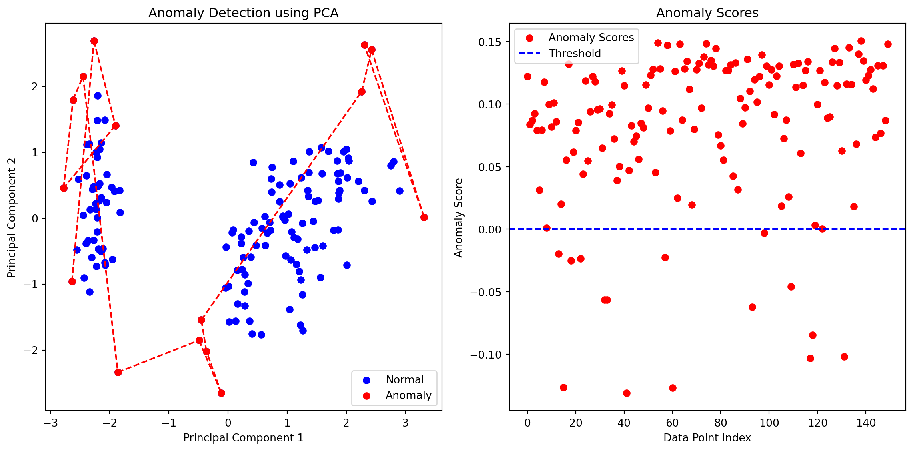
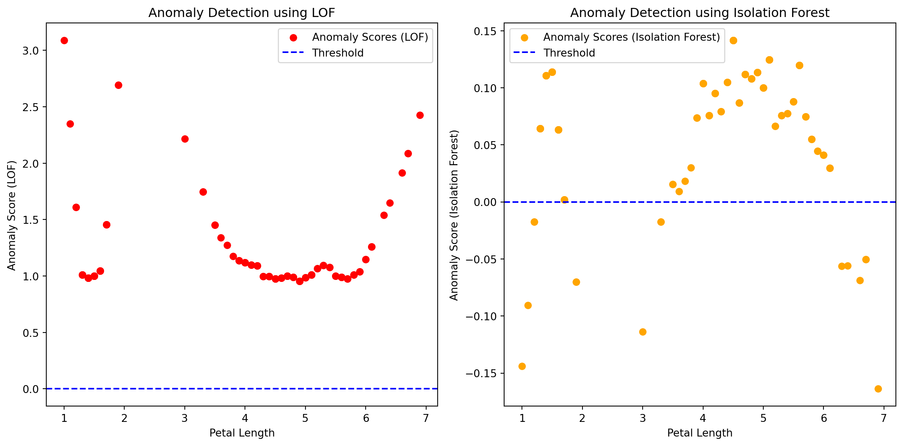

Anomaly detection, also known as outlier detection, is a technique in data analysis and machine learning that focuses on identifying patterns or instances that deviate significantly from the majority of the data. These anomalies are observations that do not conform to expected behavior and may indicate unusual or potentially fraudulent activities, errors, or rare events.
Key points about anomaly detection:
Unsupervised Learning:
Anomaly detection is often implemented as an unsupervised learning task, meaning that the algorithm identifies anomalies without relying on labeled data explicitly indicating which instances are anomalous.
Types of Anomalies:
Anomalies can take various forms, including outliers, novelties, or deviations from established patterns. Outliers are observations that are significantly different from the majority, while novelties refer to previously unseen patterns.
Applications:
Anomaly detection is applied in various domains, such as fraud detection in financial transactions, network security monitoring, manufacturing quality control, healthcare monitoring, and predictive maintenance in machinery.
Techniques:
There are several techniques for anomaly detection, including statistical methods, machine learning algorithms, and deep learning approaches. Common statistical methods include z-score, Mahalanobis distance, and isolation forests. Machine learning algorithms such as one-class SVM (Support Vector Machines), k-nearest neighbors (KNN), and autoencoders are frequently used.
Threshold-based Approaches:
One common approach in anomaly detection is setting a threshold beyond which data points are considered anomalous. Data points with a measure (e.g., distance, error) exceeding this threshold are flagged as anomalies.
Data Preprocessing:
Proper data preprocessing is crucial for effective anomaly detection. This may involve scaling, transforming, or handling missing values in the data.
Evaluation Metrics:
Anomaly detection performance is evaluated using metrics such as precision, recall, F1-score, and area under the receiver operating characteristic (ROC) curve.
Challenges:
Anomaly detection faces challenges, such as defining what constitutes normal behavior, handling imbalanced datasets, and adapting to evolving patterns over time.
Anomaly detection plays a crucial role in ensuring the integrity and security of systems, identifying potential issues, and enabling proactive measures to address abnormal situations. The choice of a specific anomaly detection technique depends on the characteristics of the data and the requirements of the application.
Visualization
Principal Component Analysis (PCA) is a dimensionality reduction technique that can be used for anomaly detection by identifying patterns and reducing the feature space. In this example, we’ll use PCA to reduce the dimensionality of the Iris dataset and then apply an anomaly detection approach based on the reconstruction error. The idea is that anomalies might result in higher reconstruction errors when transforming and then inversely transforming the data using the principal components. In this code:
The Iris dataset is standardized using StandardScaler to ensure that each feature has a mean of 0 and a standard deviation of 1.
PCA is applied to reduce the dimensionality to two principal components.
An Isolation Forest model is then applied to the reduced data for anomaly detection.
Anomalies are identified based on the Isolation Forest predictions, and the anomalies are plotted in red.
import numpy as npimport matplotlib.pyplot as pltfrom sklearn.decomposition import PCAfrom sklearn.ensemble import IsolationForestfrom sklearn.preprocessing import StandardScalerfrom sklearn import datasets# Load the Iris datasetiris = datasets.load_iris()X = iris.datay = iris.target# Standardize the featuresscaler = StandardScaler()X_standardized = scaler.fit_transform(X)# Apply PCA for dimensionality reductionpca = PCA(n_components=2)X_pca = pca.fit_transform(X_standardized)# Apply Isolation Forest for anomaly detection on the reduced dataclf = IsolationForest(contamination=0.1, random_state=42)clf.fit(X_pca)# Get anomaly scoresanomaly_scores = clf.decision_function(X_pca)# Predict the anomaliesy_pred = clf.predict(X_pca)anomaly_mask = y_pred ==-1# Anomalies are marked as -1# Plot the original data and highlight anomalies with connecting linesplt.figure(figsize=(12, 6))# Scatter plotplt.subplot(1, 2, 1)plt.scatter(X_pca[:, 0], X_pca[:, 1], c='blue', label='Normal')plt.scatter(X_pca[anomaly_mask, 0], X_pca[anomaly_mask, 1], c='red', label='Anomaly')# Connect the anomaly points with a lineanomaly_points = X_pca[anomaly_mask]for i inrange(1, len(anomaly_points)): plt.plot([anomaly_points[i-1, 0], anomaly_points[i, 0]], [anomaly_points[i-1, 1], anomaly_points[i, 1]], c='red', linestyle='--')plt.title('Anomaly Detection using PCA')plt.xlabel('Principal Component 1')plt.ylabel('Principal Component 2')plt.legend()# Anomaly score plotplt.subplot(1, 2, 2)plt.scatter(range(len(anomaly_scores)), anomaly_scores, c='red', label='Anomaly Scores')plt.axhline(y=0, color='blue', linestyle='--', label='Threshold')plt.title('Anomaly Scores')plt.xlabel('Data Point Index')plt.ylabel('Anomaly Score')plt.legend()plt.tight_layout()plt.show()

To get the anomaly scores assigned by the Isolation Forest model to each data point, you can use the decision_function method. The anomaly score represents the model’s confidence that a data point is an anomaly, and lower scores generally indicate a higher likelihood of being an anomaly. The decision_function method is used to obtain the anomaly scores. The anomaly scores are then plotted, and a threshold (horizontal dashed line) is included to help visualize the separation between normal and anomalous points. Adjust the threshold based on your specific requirements and the characteristics of the dataset.
import numpy as npimport matplotlib.pyplot as pltfrom sklearn.preprocessing import StandardScalerfrom sklearn.neighbors import LocalOutlierFactorfrom sklearn.ensemble import IsolationForestfrom sklearn import datasets# Load the Iris datasetiris = datasets.load_iris()X = iris.datay = iris.target# Choose the feature for anomaly detection (e.g., Petal Length)feature_index =2# Petal LengthX_feature = X[:, feature_index].reshape(-1, 1)# Standardize the featurescaler = StandardScaler()X_feature_standardized = scaler.fit_transform(X_feature)# Apply Local Outlier Factor (LOF) for anomaly detectionlof = LocalOutlierFactor(n_neighbors=20, contamination=0.1)lof.fit_predict(X_feature_standardized)anomaly_scores_lof =-lof.negative_outlier_factor_# Apply Isolation Forest for anomaly detectionisolation_forest = IsolationForest(contamination=0.1, random_state=42)isolation_forest.fit(X_feature_standardized)anomaly_scores_isolation_forest = isolation_forest.decision_function(X_feature_standardized)# Plot the anomaly scores for both methodsplt.figure(figsize=(12, 6))# Anomaly scores using Local Outlier Factor (LOF)plt.subplot(1, 2, 1)plt.scatter(X_feature, anomaly_scores_lof, c='red', label='Anomaly Scores (LOF)')plt.axhline(y=0, color='blue', linestyle='--', label='Threshold')plt.title('Anomaly Detection using LOF')plt.xlabel('Petal Length')plt.ylabel('Anomaly Score (LOF)')plt.legend()# Anomaly scores using Isolation Forestplt.subplot(1, 2, 2)plt.scatter(X_feature, anomaly_scores_isolation_forest, c='orange', label='Anomaly Scores (Isolation Forest)')plt.axhline(y=0, color='blue', linestyle='--', label='Threshold')plt.title('Anomaly Detection using Isolation Forest')plt.xlabel('Petal Length')plt.ylabel('Anomaly Score (Isolation Forest)')plt.legend()plt.tight_layout()plt.show()

In the comparison, both plots show the anomaly scores for the “Petal Length” feature using LOF and Isolation Forest. The threshold is visualized with a horizontal dashed line. You can observe how each method identifies anomalies based on the anomaly scores. Adjust the parameters of the algorithms and explore different features for further experimentation. The left subplot shows the anomaly scores and the threshold for the Local Outlier Factor (LOF). The left subplot shows the anomaly scores and the threshold for the Local Outlier Factor (LOF). The right subplot shows the anomaly scores and the threshold for the Isolation Forest. Feel free to analyze the visual comparison and numerical scores to understand how each method identifies anomalies in the “Petal Length” feature. Adjust parameters and thresholds based on your specific requirements.
In practice, it’s often a good idea to try multiple anomaly detection methods and compare their performance on your specific dataset. Additionally, consider the trade-offs between false positives and false negatives based on the consequences of missing true anomalies or incorrectly flagging normal instances as anomalies. In the provided example, you used both Local Outlier Factor (LOF) and Isolation Forest for anomaly detection. Visualize the results, adjust parameters, and assess the performance based on both visual inspection and quantitative metrics.